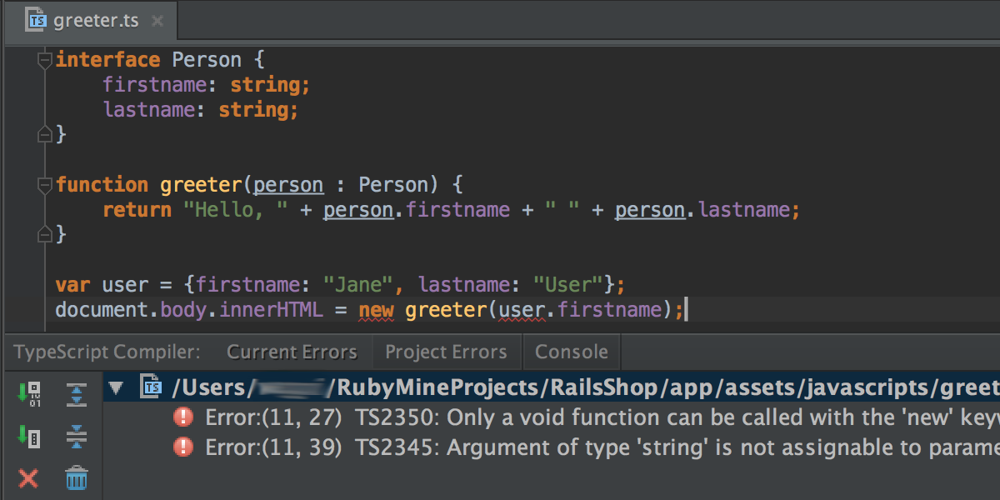

TypeScript
особенности разработки

Frontendconf 2015
особенности разработки
Список всевозможных трансляторов и диалектов: goo.gl/EAabNP (340+)
Светлое будущее ES6+ уже вчера
let say = (def:string):string => `TypeScript is ${def}!`;
say('pretty amazing')
Исходники по адресу:
https://github.com/Microsoft/TypeScript/
npm install -g typescripttsc my_application.ts
var say = (def:string):string => `TypeScript is ${def}!`;
say('pretty amazing');
var say = (def:string):string => `TypeScript is ${def}!`;
say('pretty amazing');
var say = function (def) { return ("TypeScript is " + def + "!"); };
say('pretty amazing');
(function() {
var say;
say = (function(_this) {
return function(def) {
return "TypeScript is " + def + "!";
};
})(this);
say('pretty amazing');
}).call(this);
var gvstr;
var _this = this; // Babel делает так же
var say = function (def) {
return _this.gvstr = "T..." + def + "!"
};
say('pretty amazing');
(function() {
var say;
say = (function(_this) {
return function(def) {
return "T..." + def + "!";
};
})(this);
say('pretty amazing');
}).call(this);enum Color { Red, Green, Blue }
var color :Color = Color.Green;
var Color;
(function (Color) {
Color[Color["Red"] = 0] = "Red";
Color[Color["Green"]= 1] = "Green";
Color[Color["Blue"] = 2] = "Blue";
})(Color || (Color = {}));
var color = 1;
const enum Color { Red, Green, Blue }
var color :Color = Color.Green;
var c = 1;
File → Settings → Language & Frameworks → TypeScript → Enable TypeScript Compiler
/// <amd-module name="lib/md5" />
function md5() { ... }
export = md5;
define("lib/md5", ["require", "exports"], function (require, exports) {
function md5() { ... }
return md5;
});
/// <amd-dependency path="lib/global" />
define(["require", "exports", "lib/global"], function (require, exports) { ... });
/// <amd-dependency path="legacy/base/view" name="View" /> View.someDo();
define(["require", "exports", "legacy/base/view"],
function (require, exports, View) {
View.someDo();
}
);
/// <reference path="legacy/base/view.d.ts" /> /// <amd-dependency path="legacy/base/view" name="View" />
Эквивалентно записи:
/// <reference path="legacy/base/view.d.ts" />
import View = require("legacy/base/view");
define(function () {
function md5() { /* ... */ }
function uid() { /* ... */ }
return {
md5: md5,
uid: uid
}
});
class AppController {
private _uid: string;
constructor() { ... }
setUid(): string {
return this._uid = crypt.uid(); // crypt в legacy
}
init(): void { ... }
run(): void { ... }
static exec(ctrl: AppController): void { ... }
}
export = AppController;
/// <amd-dependency path="lib/crypt" />
class AppController {
setUid(): string {}
}
define(["require", "exports", "lib/crypt"], function (require, exports) {
var AppController = (function () {
function AppController() {}
AppController.prototype.setUid = function () { this._uid = crypt.uid() };
return AppController;
})();
return AppController;
});
/// <amd-dependency path="lib/crypt" />
declare var require:any;
var crypt = require("lib/crypt");
class AppController { ... }
define(["require", "exports", "lib/crypt"], function (require, exports) {
var crypt = require("lib/crypt");
var AppController = (function () {
function AppController() {}
AppController.prototype.setUid = function () { this._uid = crypt.uid() };
return AppController;
})();
return AppController;
});
declare module "lib/crypt" {
export function md5() :string;
export function uid() :string;
}
/// <require path="lib/crypt.d.ts" />
import crypt = require("lib/crypt");
class AppController { ... }
define(["require", "exports", "lib/crypt"], function (require, exports, crypt) {
var AppController = (function () {
function AppController() {}
AppController.prototype.setUid = function () { this._uid = crypt.uid() };
return AppController;
})();
return AppController;
});
render: function() {
return <div className="train">
<div className="title">{this.state.title}</div>
</div>
}
render: function() {
return React.jsx(
"<div className="train">
<div className="title">{this.state.title}</div>
</div>"
)
}
Документация: wix.github.io/react-templates
.../page/train/seats/carMap/carMap/
<rt-require dependency="bemp/blocks/popup/component" as="Popup"/>
<rt-require dependency="bemp/blocks/train/seats/carMap/legend/component" as="Legend"/>
<div class="car_wrapper">
<Ereg isAvailable={this.props...} schemeHeight={this...} className="...">
</Ereg>{this.props.children}<div class="..." rt-if="...">
<Popup
innerHtml={this.props.errorMessage}
active="{!this.state.popupHiddenByClick}"
onClose={this.onPopupClosed}></Popup>
</div>
<Legend rt-if="this.props.showLegend" className="..."/>
</div>
define([
'react/addons', 'lodash', 'bemp/blocks/popup/component', ...
], function (React, _, Popup, ...) {
'use strict';
return function () {
return React.createElement('div', {...}, React.createElement(Ereg, {
'isAvailable': this.props.isEregAvailable, ...
}),
this.props.errorMessage
? React.createElement('div', {...}, React.createElement(Popup, {
'innerHtml': this.props.errorMessage,
'onClose': this.onPopupClosed
}))
: null,
...
};
});
define(['react', './carMapItem.rt', ...], function (React, template, ...) {
return React.createClass({
displayName: 'carMapItem',
getDefaultProps: function () {
return { ... }
},
checkErrorMessage: function (props) { ... },
getInitialState: function () {
return { ... }
},
onPopupClosed: function () {
this.setState({ ... })
},
render: template
});
});
import React = require("react");
import template = require("./carMapItem.rt");
class carMapItem extends React.Component {
public displayName:string = 'carMapItem',
static defaultProps = {
...
onErrorShow: () => void 0
}
getInitialState() { return { ... } }
onPopupClosed() { this.setState({ ... }) }
render() { return template }
}
export = carMapItem;